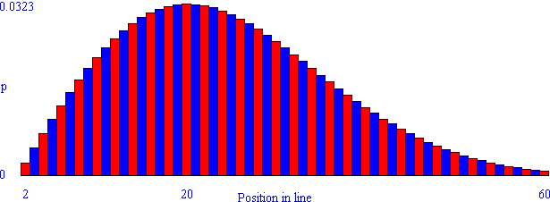

Solution to puzzle 21: Birthday line
The probability, p(n), of getting a free ticket when you are the nth person is line is:
(probability that none of the first n-1 people share a birthday) · (probability that you share a birthday with one of the first n-1 people)
So p(n) = [1 · 364/365 · 363/365 · ...· (365-(n-2))/365] · [(n-1)/365]
We seek the least n such that p(n) > p(n+1), or p(n)/p(n+1) > 1 (since p(n) > 0.)
This will locate the first, and only, maximum of the probability distribution, i.e., its mode.
p(n)/p(n+1) = 365/(366-n) · (n-1)/n
Now, p(n)/p(n+1) > 1 implies 365n - 365 > 366n - n2, and so n2 - n - 365 > 0
An approximate factorization of this quadratic equation gives: (n + 18.6)(n - 19.6) > 0
Rejecting the negative region, inequality is satisfied if n > 19.6
Therefore the position in line that gives you the best chance of being the first duplicate birthday is 20th.
Note that, although this is the best position in line, it offers only about a 1/31 chance of getting the free ticket! The histogram below shows the probability, p, of being the first duplicate birthday for each position in line from 2nd to 60th. The probability distribution is asymmetrical: it increases quite rapidly from almost zero for 2nd in line, to about 0.0323 for 20th in line, and then slowly decreases, so that the probability when 54th in line is roughly equal to that when 2nd.
Source: birthday/line on rec-puzzles.org